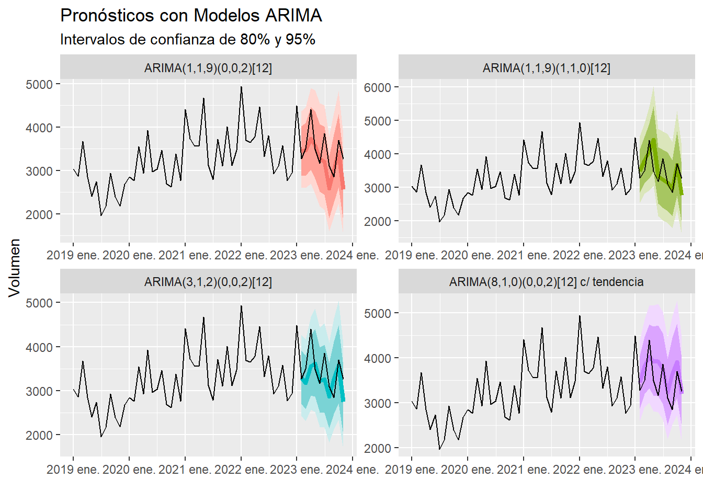

# Paquetes
paquetes = c('dplyr','ggplot2','tsibble','fable','feasts',
'gridExtra','tseries','fable.prophet','plotly')
lapply(paquetes, library, character.only=TRUE)Spanish Version
Pronóstico del Volumen de Ventas de Aguacate en EEUU
A continuación se presenta el desarrollo de distintos pronósticos para el volumen de ventas de Aguacate en Estados Unidos. El documento está dividido por secciones relacionadas con el tipo de proceso o pronóstico.
Modelos a revisar:
Suavización Exponencial
ARIMA
Descomposición STL
Prophet
Autorregresión de Redes Neuronales
PAQUETES
Paquetes cargados en la librería necesarios para este análisis.
PREPARACIÓN DE DATOS
Primero se realiza una preparación de la base cargada para seleccionar solo los datos de la serie interés, agrupar la información por meses y convertir las unidades del volumen de ventas que está en libras a toneladas. Interesa saber el volumen mensual total de EEUU del tipo de aguacate orgánico.
# El volumen está en libras
serie = datos_aguacate %>%
select(Date, TotalVolume, type, region) %>%
filter(type == "organic" & region == "TotalUS") %>% # Total de EEUU
mutate(Mes = yearmonth(Date)) %>%
group_by(Mes) %>% summarise(Volumen = sum(TotalVolume)) %>%
filter(row_number() <= n()-1) %>% #Quitar última fila por información incompleta
as_tsibble(index = Mes)
# Convertir volumen de libras a toneladas
serie$Volumen = (serie$Volumen * 0.453592)/1000ANALIZAR SERIE A NIVEL, ESTACIONALIDAD Y HETEROCEDASTICIDAD
Serie a Nivel
Primero se analiza la serie a nivel y se investiga la presencia de estacionalidad.
# Graficar Serie a Nivel
graf_san = serie %>% autoplot(Volumen) + geom_point() +
labs(y = "Miles de toneladas", x = "",
title = "Volumen de ventas de aguacate en EEUU, 2015-2023")
ggplotly(graf_san)Se aprecia que la serie cuenta con una tendencia positiva, así como la posible presencia de heterocedasticidad y estacionalidad.
Estacionalidad
Al realizar las siguientes gráficas de estacionalidad con las funciones gg_season() y gg_subseries() se confirma la presencia de esta.
Heterocedasticidad
Al sospechar la presencia de heterocedasticidad, se saca una primera diferencia para ver cómo se comporta a lo largo del tiempo.
# Primera Diferencia
serie_dif =
serie %>%
mutate(Diferencia = difference(Volumen, order_by = Mes)) %>%
select(-Volumen) %>%
filter(row_number() > 1)
# Graficar Primera Diferencia
graf_serie_dif = serie_dif %>% autoplot(Diferencia) +
geom_hline(yintercept = mean(serie_dif$Diferencia),lty=2,col="red") +
geom_point() +
labs(title = "Primera Diferencia", x="")
ggplotly(graf_serie_dif)Al ver la gráfica de la primera diferencia se confirma la presencia de heterocedasticidad al ver cómo la varianza va aumentando en el tiempo. Por lo que será necesario realizar alguna transformación.
TRANSFORMACIÓN DE LA SERIE
Se va a realizar una transformación Box-Cox para tratar la heterocedasticidad de la serie para la cual se va a utilizar el método de Guerrero para obtenerla.
# Obtención de Lambda
lambda =
serie %>%
features(Volumen, features = guerrero) %>%
pull(lambda_guerrero)
# Serie Transformada
graf_st = serie %>%
autoplot(box_cox(Volumen,lambda)) +
geom_point() +
labs(
title = "Serie transformada con Box-Cox",
x ="", y= ""
)
# Graficar de comparación de serie a nivel y transformada
grid.arrange(graf_san,graf_st)También se utiliza una comparación de la primera diferencia de la serie original y la serie transformada para mostrar cómo se corrige la heterocedasticidad mediante la transforamción.
DESCOMPOSICIÓN DE LA SERIE
A continuación se muestra una descomposición de la serie en sus distintos componentes mediante el método STL, acónimo de Seasonal and Trend decomposition using Loess.
Para identificar mejor los cambios de tendencia en el indicador de tendencia-ciclo, se realiza una gráfica donde cambia de color de acuerdo a la dirección que lleva.
# Tendencia-Ciclo
tend_ciclo =
serie %>%
model(STL(box_cox(Volumen,lambda))) %>%
components() %>%
select(Mes, trend) %>%
mutate(dif = difference(trend))
# Color Cambiante para Graficar
ccpg = c()
#Nota: Está rezagado un periodo para que coincida cuando empieza el cambio
for (i in 2:nrow(tend_ciclo)){
if(tend_ciclo$dif[i] >= 0){
ccpg = append(ccpg, 'black')
}else{
ccpg = append(ccpg, 'red')
}
}
#último color igual al último disponible
ccpg = append(ccpg, ccpg[length(ccpg)])
# Gráfica de Tendencia-Ciclo
tend_ciclo %>%
select(-dif) %>%
mutate(trend = inv_box_cox(trend,lambda)) %>%
ggplot(aes(x = Mes, y = trend)) +
geom_line(col=ccpg, lwd=1.5) +
labs(title = "Tendencia-Ciclo de Volumen de Ventas de Aguacate",
subtitle = "Estados Unidos, 2015 - 2023",
y = "Miles de toneladas", x = "",
)DATOS DE ENTRENAMIENTO Y PRUEBA
Para evaluar la precisión de los pronósticos se separa la serie en un conjunto de datos de entrenamiento y otro de prueba. Para este ejercicio se busca pronosticar los siguientes 10 periodos (meses).
# Pasos a pronosticar
pap = 10
# Datos de Entrenamiento
entre_ini = substr(as.character(as.Date(serie$Mes[1])),1,7)
entre_fin = substr(as.character(as.Date(serie$Mes[nrow(serie)-pap])),1,7)
datos_entre = serie %>%
filter_index(entre_ini ~ entre_fin)
# Datos de Entrenamiento
prue_ini = substr(as.character(as.Date(serie$Mes[nrow(serie) - pap + 1])),1,7)
datos_prueba = serie %>% filter_index(prue_ini ~.)SUAVIZACIÓN EXPONENCIAL
Identificación Tentativa del Modelo
El primer modelo a revisar es el de Suavización Exponencial para el cual vamos a utilizar las características del comportamiento de la serie previamente identificadas para darnos una idea de cuál sería el mejor modelo para la serie que tenemos.
Características detectadas:
Tendencia
Estacionalidad
Heterocedasticidad
Dado que se detectan estas características se analizarán los siguientes modelos:
ETS(M,A,M)
ETS(M,Ad,M)
Además, se revisa si el Modelo Automático representa alguna buena alternativa.
# Modelos a Revisar
mod_se = datos_entre %>%
model(
Auto = ETS(Volumen), # Modelo automático <ETS(M,Ad,A)>
MAM = ETS(Volumen ~ error("M") + trend("A") + season("M")),
MAdM = ETS(Volumen ~ error("M") + trend("Ad") + season("M")),
)
# Criterios de Información (AICc)
glance(mod_se) %>% arrange(AICc)# A tibble: 3 × 9
.model sigma2 log_lik AIC AICc BIC MSE AMSE MAE
<chr> <dbl> <dbl> <dbl> <dbl> <dbl> <dbl> <dbl> <dbl>
1 Auto 0.0243 -792. 1620. 1628. 1666. 156246. 158324. 0.117
2 MAM 0.0249 -795. 1625. 1633. 1669. 168550. 176817. 0.121
3 MAdM 0.0260 -795. 1626. 1635. 1672. 155850. 159705. 0.121Si bien el modelo automático ETS(M,Ad,A) parece mostrar un mejor criterio de información de AICc, este utiliza una estacionalidad aditiva, lo que dada la heterocedasticidad del modelo no es recomendable, por lo que seleccionaremos el modelo ETS(M,Ad,M), el cual tiene más sentido dado el comportamiento de la serie.
Al evaluar la precisión de los modelos, se observa que el modelo ETS(M,Ad,M) tiene un mejor desempeño que el modelo ETS(M,A,M), por lo cuál se utilizara este, el cual es una Suavización Exponencial con Tendencia Amortiguada, Estacionalidad Multiplicativa y Errores Multiplicativos.
# A tibble: 3 × 4
.model RMSE MAE MAPE
<chr> <dbl> <dbl> <dbl>
1 Auto 437. 397. 11.8
2 MAdM 467. 417. 12.3
3 MAM 592. 452. 13.7Validación del Modelo
Una vez identificado el modelo a utilizar, hay que validarlo mediante el análisis de sus residuales. Primero vamos a revisar los supuestos de \(E[\mu]=0\) y Homocedasticidad.
Se observa que se cumple con estos supuestos, ahora faltaría ver el supuesto de normalidad.
Revisión de normalidad de los residuales
Se busca analizar mediante gráficas de histograma, cuantil-cuantil y la prueba Jarque-Bera el supuesto de normalidad de los residuales del modelo.
# Histograma de Residuales
hist_plot = residuales %>% ggplot(aes(x = .innov)) +
geom_histogram(bins = 20, lwd = 1.5,col = 'white', fill = 'slategrey') +
labs(title = "Revisión de Normalidad de Residuales: Histograma y Cuantil-Cuantil",
x = "Residuales", y ="Frecuencia")
# Gráfica Cuantil Cuantil
qq_plot = residuales %>% ggplot(aes(sample = .innov)) +
stat_qq(col = 'slateblue') + stat_qq_line() +
labs(x = "Cuantiles Teóricos", y ="Cuantiles Muestrales")
grid.arrange(hist_plot,qq_plot)# Prueba Jarque-Bera
# p-value > 0.05 indica que no se puede rechazar que se distribuya de manera normal
jarque.bera.test(residuales$.innov)
Jarque Bera Test
data: residuales$.innov
X-squared = 1.4323, df = 2, p-value = 0.4886Pudiera ser debatible si se puede considerara válido el supuesto de normalidad dadas las gráficas y la prueba que indica que no se puede rechazar que los residuales se distribuyan de manera normal.
Ante esta situación se ofrecen dos alternativas para la generación de intervalos de confianza. Se pueden realizar asumiendo distribución normal, o también mediante una simulación Bootstrap.
Gráficas de Pronósticos
# Graficar Pronóstico contra Valores reales (Supuesto Distribución Normal)
graf_se_dn = mod_se %>% select(MAdM) %>% forecast(h = pap) %>%
autoplot(
serie %>% filter(Mes >= yearmonth("2019-01-01")),
lwd = 1.5,
level = 80
) +
labs(title = "Pronóstico con Suavización Exponencial ETS(M,Ad,M)",
subtitle = "Modelo ETS(M,Ad,M) con Intervalos con Distribución Normal",
x = "")
# Graficar Pronóstico contra Valores reales (Bootstrap)
graf_se_boot = mod_se %>% select(MAdM) %>% forecast(h = pap, bootstrap = TRUE) %>%
autoplot(
serie %>% filter(Mes >= yearmonth("2019-01-01")),
lwd = 1.5,
level = 80
) +
labs(subtitle = "Modelo ETS(M,Ad,M) con Intervalos Bootstrap",
x = "")
grid.arrange(graf_se_dn,graf_se_boot)Nótese que no se observan mayores diferencias entre ambos tipos de intervalos.
ARIMA
El segundo modelo a revisar es el ARIMA Estacional o SARIMA para el cual también vamos a aprovechar las características del comportamiento de la serie previamente identificadas para darnos una idea de cuáles serían los mejores modelos. Como la serie tiene tendencia y estacionalidad, podría necesitarse sacarse una o más diferencias. Por otro lado, para corregir la heterocedasticidad se puede recurrir a la transformación Box-Cox.
Identificación Tentativa
Primero necesitamos que la serie sea estacionaria, para lo cual se sacaron diferencias estacionales y primera diferencia para identificar si es conveniente sacar más de una diferencia y si se prefiere la primera diferencia o la diferencia estacional. Al sacar diferencia estacional, no fue suficiente y se tenía que sacar otra diferencia. Por otro lado, al sacar solo la primera diferencia, parece ser suficiente para volver la serie estacionaria.
# Media de diff(box_cox(Volumen,lambda)) para gráfica de estacionariedad
m_dif= datos_entre %>%
mutate(dif_vol = difference(box_cox(Volumen,lambda))) %>%
pull(dif_vol) %>% mean(na.rm = TRUE)
# Gráfica de Diferencias Necesarias para Estacionariedad
datos_entre %>% autoplot(
box_cox(Volumen,lambda) %>%
difference(1)
) + geom_point() +
labs(
title = "Gráfica de Estacionariedad",
x = "", y = ""
) +
geom_hline(yintercept = m_dif, lty=2, col="red")También se puede apoyar de las pruebas de de Raíz Unitaria y fortaleza estacional para detectar qué diferencias sería más conveniente sacar.
# Prueba de Diferencia Estacional
# seasonal_strength_year >= 0.64 indica sacar diferencia estacional
datos_entre %>% features(box_cox(Volumen,lambda), feat_stl)# A tibble: 1 × 9
trend_strength seasonal_strength_year seasonal_peak_year seasonal_trough_year
<dbl> <dbl> <dbl> <dbl>
1 0.877 0.506 5 11
# ℹ 5 more variables: spikiness <dbl>, linearity <dbl>, curvature <dbl>,
# stl_e_acf1 <dbl>, stl_e_acf10 <dbl># Número de Diferencias Estacionales Necesarias
datos_entre %>% features(box_cox(Volumen,lambda), unitroot_nsdiffs)# A tibble: 1 × 1
nsdiffs
<int>
1 0# Prueba de Raíz Unitaria (versión 1)
# kpss_pvalue < 0.05 indica sacar diferencia
datos_entre %>% features(box_cox(Volumen,lambda), unitroot_kpss)# A tibble: 1 × 2
kpss_stat kpss_pvalue
<dbl> <dbl>
1 2.08 0.01# Número de Diferencias Necesarias
datos_entre %>% features(box_cox(Volumen,lambda), unitroot_ndiffs)# A tibble: 1 × 1
ndiffs
<int>
1 1Las distintas pruebas indican que lo recomendado sería no sacar diferencia estacional y sacar primera diferencia.
ACF & PACF
El siguiente paso sería revisar las gráficas de Autocorrelación Muestral y Parcial para identificar modelos tentativos.
#Gráficas de Función de Autocorrelación Muestral y Parcial: ACF y PACF
acf_plot = autoplot(ACF(datos_entre, difference(box_cox(Volumen,lambda)), lag_max = 36)) +
labs(y = "ACF", x="", title = "Funciones de Autocorrelación Muestral y Parcial: ACF y PACF")
pacf_plot = autoplot(PACF(datos_entre, difference(box_cox(Volumen,lambda)), lag_max = 36)) +
labs(y = "PACF", x= "Rezagos")
grid.arrange(acf_plot,pacf_plot)Estimación de Modelos
Se estimaron distintos modelos con base en los rezagos mostrados en las ACF y PACF y el análisis de residuales.
# Estimar Modelos (d=1,D=0)
mod_arima = datos_entre %>%
model(
m210_002 = ARIMA(box_cox(Volumen,lambda) ~ 0 + pdq(2,1,0) + PDQ(0,0,2)),
m011_002 = ARIMA(box_cox(Volumen,lambda) ~ 0 + pdq(0,1,1) + PDQ(0,0,2)),
m810_002_c = ARIMA(box_cox(Volumen,lambda) ~ 1 + pdq(8,1,0) + PDQ(0,0,2)),
m217_002_c = ARIMA(box_cox(Volumen,lambda) ~ 1 + pdq(2,1,7) + PDQ(0,0,2)),
m312_002 = ARIMA(box_cox(Volumen,lambda) ~ 0 + pdq(3,1,2) + PDQ(0,0,2)),
m119_002 = ARIMA(box_cox(Volumen,lambda) ~ 0 + pdq(1,1,9) + PDQ(0,0,2))
)
# Modelos ordenados por AICc
glance(mod_arima) %>% arrange(AICc)# A tibble: 6 × 8
.model sigma2 log_lik AIC AICc BIC ar_roots ma_roots
<chr> <dbl> <dbl> <dbl> <dbl> <dbl> <list> <list>
1 m810_002_c 20.2 -278. 580. 583. 610. <cpl [8]> <cpl [24]>
2 m217_002_c 19.4 -277. 580. 584. 613. <cpl [2]> <cpl [31]>
3 m210_002 21.7 -287. 584. 585. 597. <cpl [2]> <cpl [24]>
4 m119_002 19.6 -277. 581. 585. 614. <cpl [1]> <cpl [33]>
5 m011_002 22.8 -290. 587. 588. 597. <cpl [0]> <cpl [25]>
6 m312_002 22.2 -286. 588. 590. 609. <cpl [3]> <cpl [26]># Precisión de Pronósticos
mod_arima %>% forecast(h = pap) %>% accuracy(datos_prueba) %>%
select(.model,RMSE,MAE,MAPE) %>% arrange(MAPE)# A tibble: 6 × 4
.model RMSE MAE MAPE
<chr> <dbl> <dbl> <dbl>
1 m312_002 413. 328. 9.20
2 m119_002 423. 338. 9.56
3 m810_002_c 417. 336. 10.2
4 m210_002 486. 386. 10.7
5 m011_002 516. 412. 11.5
6 m217_002_c 674. 587. 17.9 Se separó su análisis por diferenciación para su comparabilidad.
# Estimar Modelos (d=1,D=1)
mod_arima = datos_entre %>%
model(
m119_110 = ARIMA(box_cox(Volumen,lambda) ~ 0 + pdq(1,1,9) + PDQ(1,1,0)),
m119_011 = ARIMA(box_cox(Volumen,lambda) ~ 0 + pdq(1,1,9) + PDQ(0,1,1))
)
# Modelos ordenados por AICc
glance(mod_arima) %>% arrange(AICc)# A tibble: 2 × 8
.model sigma2 log_lik AIC AICc BIC ar_roots ma_roots
<chr> <dbl> <dbl> <dbl> <dbl> <dbl> <list> <list>
1 m119_011 22.9 -251. 525. 530. 554. <cpl [1]> <cpl [21]>
2 m119_110 23.5 -252. 527. 532. 556. <cpl [13]> <cpl [9]> # Precisión de Pronósticos
mod_arima %>% forecast(h = pap) %>% accuracy(datos_prueba) %>%
select(.model,RMSE,MAE,MAPE) %>% arrange(MAPE)# A tibble: 2 × 4
.model RMSE MAE MAPE
<chr> <dbl> <dbl> <dbl>
1 m119_110 425. 324. 9.18
2 m119_011 502. 411. 12.2 Y después se eligieron los mejores modelos.
# A tibble: 4 × 8
.model sigma2 log_lik AIC AICc BIC ar_roots ma_roots
<chr> <dbl> <dbl> <dbl> <dbl> <dbl> <list> <list>
1 m119_110 23.5 -252. 527. 532. 556. <cpl [13]> <cpl [9]>
2 m810_002_c 20.2 -278. 580. 583. 610. <cpl [8]> <cpl [24]>
3 m119_002 19.6 -277. 581. 585. 614. <cpl [1]> <cpl [33]>
4 m312_002 22.2 -286. 588. 590. 609. <cpl [3]> <cpl [26]># A tibble: 4 × 4
.model RMSE MAE MAPE
<chr> <dbl> <dbl> <dbl>
1 m119_110 425. 324. 9.18
2 m312_002 413. 328. 9.20
3 m119_002 423. 338. 9.56
4 m810_002_c 417. 336. 10.2 Para la validación de cada modelo se seguía el mismo proceso.
Validación del Modelo
Se revisaba la significacia estadística de sus componentes y se sacaban sus residuales para analizar que se cumplieran los supuestos.
# Modelo a Revisar
mar = "m312_002"
residuales = augment(mod_arima) %>% filter(.model == mar) # Residuales del Modelo a Revisar
# Revisar siginificancia de valores
#tidy(mod_arima)
mod_arima %>% select(mar) %>% tidy() %>% print(n=20)# A tibble: 7 × 6
.model term estimate std.error statistic p.value
<chr> <chr> <dbl> <dbl> <dbl> <dbl>
1 m312_002 ar1 -0.0251 0.256 -0.0980 0.922
2 m312_002 ar2 0.276 0.149 1.85 0.0671
3 m312_002 ar3 0.357 0.133 2.68 0.00873
4 m312_002 ma1 -0.731 0.251 -2.91 0.00450
5 m312_002 ma2 -0.169 0.190 -0.888 0.377
6 m312_002 sma1 0.511 0.110 4.65 0.0000108
7 m312_002 sma2 0.518 0.153 3.39 0.00102 Se graficaban los residuales para que se cumplieran los supuestos de \(E[\mu]=0\) y Homocedasticidad.
Se graficaban las gráficas ACF y PACF de los residuales para revisar la autocorrelación remanente en el modelo.
Así como la prueba de Ljung-Box
# A mable: 1 x 1
m312_002
<model>
1 <ARIMA(3,1,2)(0,0,2)[12]># A tibble: 1 × 3
.model lb_stat lb_pvalue
<chr> <dbl> <dbl>
1 m312_002 43.1 0.000469Revisión de normalidad de los residuales
Se busca analizar mediante gráficas de histograma, cuantil-cuantil y la prueba Jarque-Bera el supuesto de normalidad de los residuales del modelo.
Jarque Bera Test
data: residuales$.innov
X-squared = 1.6021, df = 2, p-value = 0.4489Gráficas de Pronósticos
Se graficaron los pronósticos de los principales modelos para compararlos.
# Pronosticar los 4 Mejores Modelos ARIMA
# Modelos ARIMA para Graficar
mod_arima_pg = mod_arima %>%
select(
`ARIMA(1,1,9)(0,0,2)[12]` = m119_002,
`ARIMA(3,1,2)(0,0,2)[12]` = m312_002,
`ARIMA(8,1,0)(0,0,2)[12] c/ tendencia` = m810_002_c,
`ARIMA(1,1,9)(1,1,0)[12]` = m119_110
)
# Graficar Pronóstico contra Valores reales
graf_arima_4m = mod_arima_pg %>%
forecast(h = pap) %>%
autoplot(
serie %>% filter(Mes >= yearmonth("2021-01-01")),
level = NULL
) +
labs(title = "Pronóstico con Modelos ARIMA",x = "") +
theme(legend.position='none') +
facet_wrap(vars(.model), ncol = 2)
ggplotly(graf_arima_4m)Nota: Se puede pasar el cursor sobre la gráfica para ver los valores de cada punto.
Así como también se graficaron sus intervalos de confianza.
#Graficar modelos individuales con intervalos de confianza
mod_arima_pg %>% forecast(h = pap) %>%
autoplot(
serie %>% filter(Mes >= yearmonth("2019-01-01")),
lwd = 1.5,
) +
labs(title = "Pronósticos con Modelos ARIMA", x = "",
subtitle = "Intervalos de confianza de 80% y 95%") +
theme(legend.position='none') +
facet_wrap(vars(.model), scales = "free", ncol = 2)
PRONÓSTICO CON DESCOMPOSICIÓN STL
Despúe se revisó el modelo de Descomposición STL, el cual utiliza dicho método utilizado anteriormente para descomponer la serie, para posteriormente desestacionalizar la serie y aplicarle un componente estacional por medio de algún otro método, como la suacización exponencial (ETS). Como solo se utiliza un método, en este caso se pasa directamente al análisis de residuales
# Estimar Modelo (ETS)
mod_stl = datos_entre %>%
model(
dstl = decomposition_model(
STL(box_cox(Volumen,lambda)), #Método de descomposición
ETS(season_adjust), #Serie desestacionalizada
ETS(season_year) #Componente estacional
)
)Validación del Modelo
Jarque Bera Test
data: residuales$.innov
X-squared = 0.81585, df = 2, p-value = 0.665Gráficas de Pronósticos
Se realizan pronósticos con intervalos de confianza con el supuesto de normalidad y Bootstrap.
PRONÓSTICO CON PROPHET
Se realizaron pronósticos también con el modelo de Prophet de Facebook utilizando distintos órdenes y viendo su precisión para elegir el mejor modelo.
# Estimar Modelos
set.seed(10)
mod_prophet = datos_entre %>%
model(
`Order = 10` = prophet(Volumen ~ season(
period="year", order = 10, type = "multiplicative")),
`Order = 5` = prophet(Volumen ~ season(
period="year", order = 5, type = "multiplicative")),
`Order = 3` = prophet(Volumen ~ season(
period="year", order = 3, type = "multiplicative")),
`Order = 2` = prophet(Volumen ~ season(
period="year", order = 2, type = "multiplicative"))
)
# Precisión de Pronósticos
mod_prophet %>% forecast(h = pap) %>% accuracy(datos_prueba) %>%
select(.model,RMSE,MAE,MAPE) %>% arrange(MAPE)# A tibble: 4 × 4
.model RMSE MAE MAPE
<chr> <dbl> <dbl> <dbl>
1 Order = 10 748. 579. 17.8
2 Order = 5 738. 619. 18.9
3 Order = 2 761. 651. 20.0
4 Order = 3 788. 652. 20.1Una vez identificado el mejor modelo se procede a su validación.
Validación del Modelo
Jarque Bera Test
data: residuales$.innov
X-squared = 1.5829, df = 2, p-value = 0.4532Gráficas de Pronósticos
Se graficaron los pronósticos de los principales modelos para compararlos.
Nota: Se puede pasar el cursor sobre la gráfica para ver los valores de cada punto.
También se realizan pronósticos para revisar los intervalos de confianza de cada modelo
PRONÓSTICO CON AUTORREGRESIÓN DE REDES NEURONALES (NNAR)
Se revisa otro modelo de Autorregresión de Redes Neuronales (NNAR) para ampliar las opciones ofrecidas. Para este modelo se revisan distintos números de nodos y viendo su precisión para elegir el mejor modelo.
# Estimar Modelos NNAR
set.seed(10) # fijar aleatorios
mod_rn = datos_entre %>%
model(
`NNAR(10,1,2)` = NNETAR(box_cox(Volumen,lambda),n_nodes=2),
`NNAR(10,1,3)` = NNETAR(box_cox(Volumen,lambda),n_nodes=3),
`NNAR(10,1,4)` = NNETAR(box_cox(Volumen,lambda),n_nodes=4),
`NNAR(10,1,6)` = NNETAR(box_cox(Volumen,lambda),n_nodes=6)
)
# Precisión de Pronósticos
mod_rn %>% forecast(h = pap) %>% accuracy(datos_prueba) %>%
select(.model,RMSE,MAE,MAPE) %>% arrange(MAPE)# A tibble: 4 × 4
.model RMSE MAE MAPE
<chr> <dbl> <dbl> <dbl>
1 NNAR(10,1,3) 363. 345. 10.1
2 NNAR(10,1,2) 379. 353. 10.5
3 NNAR(10,1,4) 404. 379. 11.0
4 NNAR(10,1,6) 467. 416. 11.9Una vez identificado el mejor modelo se procede a su validación.
Validación del Modelo
Warning: Removed 12 rows containing missing values or values outside the scale range
(`geom_line()`).Warning: Removed 12 rows containing missing values or values outside the scale range
(`geom_point()`).
Warning: Removed 12 rows containing non-finite outside the scale range
(`stat_bin()`).Warning: Removed 12 rows containing non-finite outside the scale range
(`stat_qq()`).Warning: Removed 12 rows containing non-finite outside the scale range
(`stat_qq_line()`).
Jarque Bera Test
data: na.omit(residuales$.innov)
X-squared = 3.5995, df = 2, p-value = 0.1653Gráficas de Pronósticos
Se realizan pronósticos con intervalos de confianza con el supuesto de normalidad y Bootstrap.
Se graficaron los pronósticos de los principales modelos para compararlos.
Nota: Se puede pasar el cursor sobre la gráfica para ver los valores de cada punto.
También se realizan pronósticos para revisar los intervalos de confianza de cada modelo
VALIDACIÓN CRUZADA
Para realizar una evaluación más completa de de la precisión puntual de los mejores modelos hasta ahora analizados, se procede a hacer una validación cruzada, la cual, es una versión más sofisticada de los conjuntos de entrenamiento y prueba.
Para este procedimiento es necesaria hacer primero una serie extendida para ir recorriendo una ventana donde se va a ir aumentando el tamaño del conjunto de entrenamiento para ver la precisión en distintos escenarios y obtener un error promedio de estos para evaluar la precisión de cada modelo.
# Crear serie alargada con índice para Validación Cruzada
serie_alargada = serie %>%
stretch_tsibble(.init = 80, .step = 10) %>%
filter(.id != max(.id))
# Modelos para validación cruzada
set.seed(10)
mod_vc = serie_alargada %>%
model(
`Suav. Exp. ETS(M,Ad,M)` = ETS(Volumen ~ error("M") + trend("Ad") + season("M")),
`ARIMA(1,1,9)(1,1,0)` = ARIMA(box_cox(Volumen,lambda) ~ 0 + pdq(1,1,9) + PDQ(1,1,0)),
`ARIMA(3,1,2)(0,0,2)` = ARIMA(box_cox(Volumen,lambda) ~ 0 + pdq(3,1,2) + PDQ(0,0,2)),
`Decomposición STL` = decomposition_model(STL(box_cox(Volumen,lambda)),
ETS(season_adjust), ETS(season_year)),
`Prophet` = prophet(Volumen ~ season(
period="year", order = 10, type = "multiplicative")),
`Red Neu. AR (10,1,3)` = NNETAR(box_cox(Volumen,lambda),n_nodes=3)
)
mod_vc %>% forecast(h = 10) %>% accuracy(serie) %>%
select(.model,RMSE,MAE,MAPE) %>% arrange(MAPE)# A tibble: 6 × 4
.model RMSE MAE MAPE
<chr> <dbl> <dbl> <dbl>
1 Suav. Exp. ETS(M,Ad,M) 500. 398. 10.6
2 ARIMA(3,1,2)(0,0,2) 541. 423. 12.4
3 Prophet 617. 500. 14.3
4 Red Neu. AR (10,1,3) 618. 527. 14.8
5 Decomposición STL 613. 513. 15.0
6 ARIMA(1,1,9)(1,1,0) 648. 601. 17.3PRECISIÓN DE LA DISTRIBUCIÓN
También es importante analizar la precisión de los intervalos de confianza de los modelos implementados, para lo cual se muestran distintas formas de evaluar los modelos. Se van a evaluar estos modelos para pronósticos de 10 periodos a pronosticar.
Empezamos con el Skill Score, el cual ayudar a ordenar de mejor a peor la precisión general de los intervalos de confianza, donde mientras más alto sea este puntaje van a ser más precisos los posibles intervalos de confianza arrojados por el modelo.
# A tibble: 6 × 3
.model .type skill
<chr> <chr> <dbl>
1 Suav. Exp. ETS(M,Ad,M) Test 0.367
2 ARIMA(3,1,2)(0,0,2) Test 0.284
3 Decomposición STL Test 0.228
4 Red Neu. AR (10,1,3) Test 0.173
5 ARIMA(1,1,9)(1,1,0) Test 0.166
6 Prophet Test 0.160En la anterior tabla se muestra que el modelo de Suavización Exponencial ETS(M,Ad,M) tiene la mejor precisión general, independientemente del nivel de confianza. Sin embargo, se puede personalizar la evaluación de acuerdo a diferentes necesidades, como intervalos de confianza específicos, o que se priorice la parte inferior o superior del intervalo.
Por otra parte, el Winkler Score mide la precisión para un determinado nivel de confianza. Mientras más angosto el intervalo, más bajo el Puntaje (Score). Mientras más se salga del intervalo, más se penaliza y el Puntaje aumenta. Por lo tanto, mientras más bajo el Puntaje mejor. Por ejemplo, para pronósticos con un nivel de confianza de 95%, el modelo que mostraría un mejor puntaje sería el Modelo de Descomposicón STL, siendo este el que tenga el mejor balance entre tener un rango más angosto y que a su vez no se salta de este.
# A tibble: 6 × 3
.model .type winkler
<chr> <chr> <dbl>
1 Decomposición STL Test 2514.
2 Suav. Exp. ETS(M,Ad,M) Test 2710.
3 ARIMA(1,1,9)(1,1,0) Test 2793.
4 ARIMA(3,1,2)(0,0,2) Test 2861.
5 Red Neu. AR (10,1,3) Test 3517.
6 Prophet Test 4477.De manera similar, el Quantile Score puede servir si alguien está más interesado en que no se sobrepase específcamente el límite inferior o superior del intevalo. Se puede utilizar un puntaje específico para un determinado cuantil. Por ejemplo, si alguien tuviera como prioridad satisfacer una demanda y que no se produzca menos de lo que se pudiera llegar a vender, se puede utilizar un cuantil de 1%:
# A tibble: 6 × 3
.model .type qs
<chr> <chr> <dbl>
1 Decomposición STL Test 20.4
2 ARIMA(1,1,9)(1,1,0) Test 22.1
3 ARIMA(3,1,2)(0,0,2) Test 25.5
4 Suav. Exp. ETS(M,Ad,M) Test 31.0
5 Red Neu. AR (10,1,3) Test 46.2
6 Prophet Test 90.9Por otro lado, si alguien tuviera como prioridad que no se le quede producto y que no se produzca más de lo que se pudiera vender para evitar la merma, se puede utilizar un cuantil de 90%:
# A tibble: 6 × 3
.model .type qs
<chr> <chr> <dbl>
1 ARIMA(3,1,2)(0,0,2) Test 207.
2 Prophet Test 224.
3 Red Neu. AR (10,1,3) Test 235.
4 Suav. Exp. ETS(M,Ad,M) Test 236.
5 Decomposición STL Test 241.
6 ARIMA(1,1,9)(1,1,0) Test 265.Graficas de Intervalos de Pronósticos
Finalmente se presenta una Comparación de los distintos pronósticos para los próximos 10 periodos donde se pueden apreciar sus intervalos de confianza.
CONCLUSIONES
De acuerdo con las necesidades particulares se pueden recomendar distintos Modelos. En términos generales el Modelo de Suavización Exponencial ETS(M,Ad,M) es el que muestra tanto una mejor precisión puntual como un mejor intervalo de confianza medido mediante el Skill Score.
No obstante, si de antemano se ha determinado un nivel de confianza, por ejemplo un 95%, el modelo que cuenta con el mejor intervalo de confianza sería el de Modelo de Descomposición STL medido mediante el Winkler Score.
Asimismo, si lo que más importa es satisfacer una demanda y que no se genere menos de lo que se pudiera llegar a necesitar, por ejemplo para un 99% de confianza, el Modelo de Descomposición STL también sería el mejor según el Quantile Score para un cuantil de 1%.
Por otra parte, si lo que más preocupa es no generar más de lo que se pudiera llegar a necesitar (como para evitar merma), por ejemplo para un 90% de confianza el modelo indicado sería el Modelo ARIMA(3,1,2)(0,0,2)[12] según el Quantile Score para un cuantil de 90%.